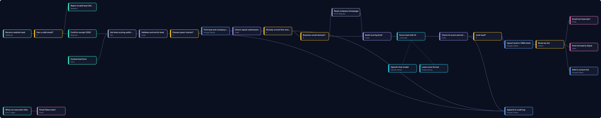
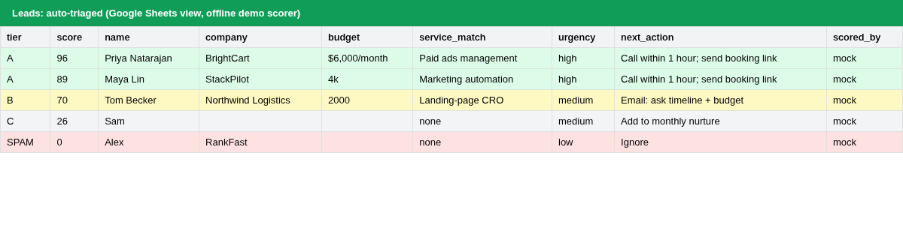
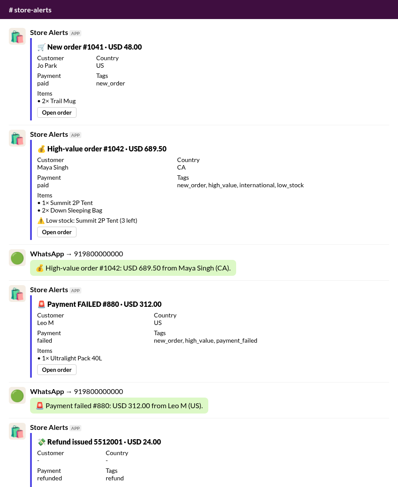

n8n automation & scrapers: real outputs
Data from our scrapers, run on public websites and job boards on 31 Oct 2026, and diagrams drawn from our real n8n workflow files. Click any job link to check it against the source.
- RealThe tables are real output from our Apify actors. We ran them from their source code on our own machine on 31 Oct 2026, against public job boards, public company websites and Google's public example spreadsheet. They're trimmed to a few rows and columns so the page stays small. This is a snapshot, so some postings will have closed since.
- RealWorkflow diagrams are generated from the shipped n8n
workflow.jsonfiles. The n8n canvas screenshot is from our own n8n instance. - SampleThe lead-scoring sheet and the store-alert preview at the bottom were made from fictional test leads and orders, using mock AI and mock Slack/WhatsApp endpoints. They are labelled again where they appear.
- No personal data: the contact finder table shows only role addresses such as hello@ or info@, and counts phone numbers without showing them. No client work or client results are shown, because we don't have any to share yet.
1. Career Site Jobs Monitor live on Apify, v2.0
It reads job postings straight from company career sites on 10 job systems (Greenhouse, Lever, Ashby, Workday, Workable, Recruitee, Personio, Teamtailor, BambooHR, plus SmartRecruiters if you turn it on). Paste a careers page and it finds the job board behind it. In monitor mode, each run returns only new or changed jobs, lists closed ones, and can post them to your webhook. Price on the Store: $1.00 per 1,000 jobs, plus a small fixed fee each time a run starts.
Tests on 31 Oct 2026
- 33 / 33 unit tests (Node 24 and 20)
- 11 / 11 live checks against real boards on 9 job systems, plus 404 handling and careers-page detection
- 15 / 15 end-to-end checks: capped runs, the next run returns the rest, a repeat run returns 0 new jobs, a changed job comes back as "updated", a closed job is reported, the webhook gets only new items
- Extra probe: Workday boards at NVIDIA (2,000 jobs, the Workday cap) and Salesforce (1,554 jobs)
Sample output (24 jobs)
2. India Jobs Scraper live on Apify
India-located jobs from the career sites of Indian startups and global companies, with city, seniority and experience pulled out of each posting, and salary in LPA when the posting gives one. Price on the Store: $1.50 per 1,000 jobs.
3. Lead List Enricher (website contacts) live on Apify
Give it a list of company websites. It reads a few pages per site (home, contact, about), respects robots.txt, and returns emails, phone numbers, social profiles, address and the contact page. You're charged only for companies where it finds contacts: $4.00 per 1,000 (here, gitlab.com had social profiles but no email). This run checked 5 sites.
4. Google Sheets Sync live on Apify
Import a sheet into a dataset, or export, append or upsert a dataset into a sheet. Below: an import of 8 rows from Google's own public example spreadsheet (the names in it are Google's sample data), done in 0.3 seconds with 1 API request.
5. Free n8n workflow pack real workflow files
Five n8n workflows we give away, each with a README, a sheet template and its own test report. Every file imports cleanly into a fresh n8n 2.45.6, and the zip passes 28 of 28 packaging checks. The diagram below is drawn from the workflow file itself.

Wide diagram: scroll sideways on a phone.
Score, dedupe and route website leads with OpenAI, Google Sheets, Slack and email. 27 nodes. Test report: 48/48 checks (the AI model is mocked in tests).
Get the free pack on Gumroad Lead Autopilot (full 7-workflow version)
6. Two more demo outputs fictional test data

